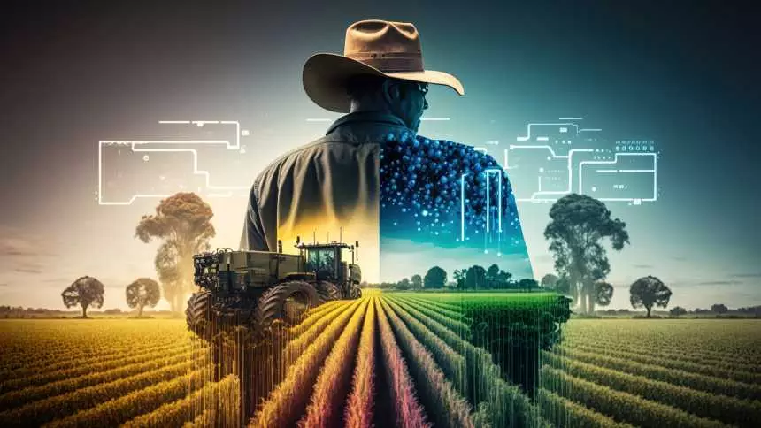

Bem-vindo à InovAgro
Oferecemos soluções inovadoras para o campo, impulsionando a produtividade e sustentabilidade.
Sobre Nós
Somos um site com o objetivo de disponibilizar ao produtor conhecimentos de técnicas sustentáveis tanto para o meio ambiente quanto para o financeiro do produtor.
Nossos Serviços
Técnicas Sustentáveis
Alternativas de manejos e conhecimentos sustentáveis para a lavoura e seu bolso.